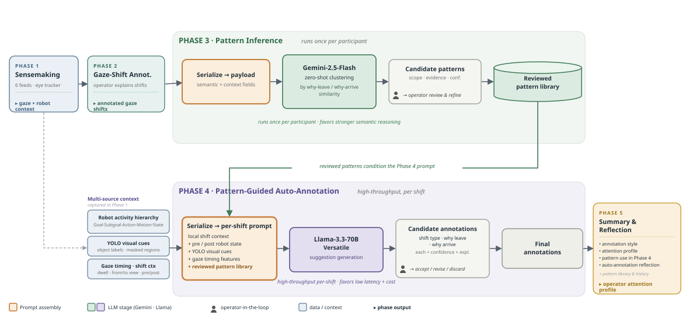

Synchronize
Align robot camera streams, robot motion events, participant gaze, and session timeline data.
Project Page | Self-Annotation and Gaze-Aware Robot Video Review
A gaze-aware workflow for replaying, reviewing, and annotating human attention during multi-robot video supervision.

Understanding where people allocate attention while supervising robots is difficult when the evidence is split across synchronized video, robot behavior logs, and eye-tracking data. Attune Self-Annotation supports a workflow in which participants can replay multi-camera robot activity, inspect gaze traces, and annotate attention shifts in context. The project is designed to help researchers connect robot motion, task events, gaze behavior, and participant interpretation during indoor robot supervision.
This page is a publication-ready scaffold. Update this abstract with the final paper abstract, results, and claims before public release.
Align robot camera streams, robot motion events, participant gaze, and session timeline data.
Review synchronized videos with gaze overlays and timeline controls for precise sensemaking.
Mark attention shifts, robot-focused gaze events, contextual notes, and behavior-level labels.
Export structured annotations for descriptive analysis and gaze prediction models.
The system combines an indoor map, synchronized robot camera views, gaze recording or replay, and annotation controls. The frontend can be driven by structured robot/camera configuration, while the optional backend records and serves Tobii gaze data for replay.
Attention1_annnotation/attune_v1/attune_pipeline_hybrid_sourcesans.svgParticipant-facing replay and annotation views for connecting attention to robot activity.
Temporal aggregation of gaze targets, attention shifts, and robot-related motion features.
Baseline and event-level models for estimating gaze target from robot motion features.
@misc{zhou2026attune,
author = {Zhou, Puqi},
title = {Attune Self-Annotation},
year = {2026},
note = {Project page scaffold},
url = {https://puqi7.github.io/Attune_SelfAnnotation/}
}